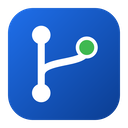

Contribution activity
Languages
Top repositories
Repositories created per year
Original work and forksProject lifespans
Created to last push, colored by languageStars against recency
Circle size is repository size · click to openComposition
Topics
Click a topic to filter the sidebarRecent public events
Settings
Optional. Adds your private repositories, the full-year contribution calendar and raises GitHub's limit from 60 to 5,000 requests an hour. Create one at github.com/settings/tokens with read-only access to Metadata and Contents.
To run and re-run Actions from the app, also give it Actions: Read and write. Invitations, GitHub notifications and gists only work with a classic token. A classic token with the repo, workflow, read:org, notifications and gist scopes covers everything in the app.
Repo Atlas checks the repositories you follow, and your invitations, and tells you when something new shows up.
Dark by default, like most editors.
Which account to show when the app opens.
Keyboard shortcuts are listed on the (F1).
Help
Getting started
- Add your GitHub token (optional). Click the gear at the bottom left of the window, or press Ctrl,, to open Settings. The token box is at the top. A token adds your private repositories and lets you make many more requests.
- Load an account or a repository. Press CtrlO, or click the account name at the top of the sidebar, then type a GitHub username, an organization or owner/repo and press Enter.
- Open a repository. Click one in the sidebar to preview it, or double-click to keep its tab open. CtrlP finds one by name.
- Follow repositories. Open a repository and click Follow, or use the bell on the left. Repo Atlas tells you about new releases, and if you like new commits, issues and failed Actions runs. Pending invitations show up there too, ready to accept.
- Your inbox. The inbox icon on the left (CtrlShiftM) has your GitHub notifications, your pull requests and the ones waiting for your review, issues assigned to you, your gists and your stars.
- Run Actions. Every repository tab lists its latest Actions runs. Re-run or cancel one, or start a workflow with Run workflow.
- Find any command. CtrlShiftP lists everything the app can do.
Keyboard shortcuts
About Repo Atlas

Maps the repositories of any GitHub user or organization: languages, activity, branches and more.